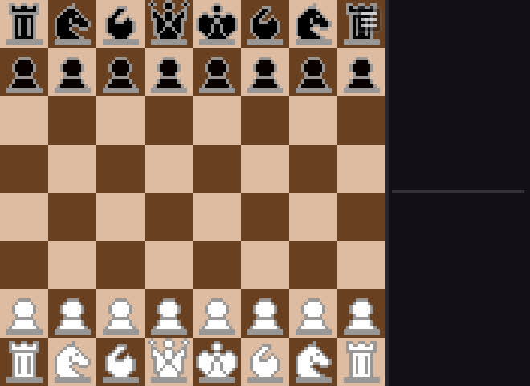

- Python
- PyTorch
- NumPy
- IA generativa
Inteligencia artificial
Cursar Introduction to Artificial Intelligence en la Universidad de Lieja despertó mi curiosidad por cómo la inteligencia artificial toma decisiones a partir de datos. En la asignatura entrené una red neuronal que juega a Pac-Man; después quise dar un paso más y crear mi propia IA desde cero: un motor de ajedrez.
Red neuronal para Pac-Man
Introduction to Artificial Intelligence, Universidad de Lieja
Entrené con PyTorch una red neuronal convolucional que aprende a jugar a Pac-Man a partir de ejemplos, sin reglas programadas. Partiendo de 15.018 situaciones de partida, cada una con el estado del tablero y la acción tomada, la red aprende a elegir el mejor movimiento: es aprendizaje supervisado.
El vídeo muestra partidas reales de la red ya entrenada en laberintos que no formaban parte del conjunto de entrenamiento. Completa cada nivel esquivando al fantasma, lo que demuestra su capacidad de generalización.
Es el mismo principio en el que se basan los modelos de IA generativa como ChatGPT o Claude: una red neuronal no recibe reglas, sino una gran cantidad de ejemplos, y ajusta sus parámetros para reducir el error de sus predicciones. Mi red aprende qué movimiento hacer a partir de partidas; un modelo de lenguaje aprende qué palabra viene después a partir de textos. La escala es muy distinta, pero la lógica de entrenamiento es la misma.
Cómo funciona la red neuronal
Este mismo proceso es el que se aplica en el análisis de datos de ingeniería: preparar y codificar bien los datos, entrenar un modelo, validarlo con casos que no ha visto y medir sus resultados. Es lo que me interesa aplicar a problemas reales, como predecir la demanda energética o detectar anomalías en el funcionamiento de una instalación.
Motor de ajedrez
Proyecto personal
Después de la asignatura quise comprobar si era capaz de diseñar una IA completa por mi cuenta. Elegí el ajedrez por ser un juego que me apasiona desde siempre y porque es un problema clásico de toma de decisiones: hay demasiadas jugadas posibles para analizarlas todas, así que la IA tiene que decidir qué calcular y qué descartar.
Lo abordé como un proyecto de ingeniería: definir el problema, elegir el algoritmo, medir su rendimiento y depurar hasta tener un producto que cualquiera puede usar.

Búsqueda con poda alfa-beta
Para elegir una jugada, la IA analiza sus opciones, las respuestas del rival y sus propias contrarrespuestas, y se queda con la que mejor resultado le garantiza aunque el rival juegue bien.
El reto es que el número de posiciones crece de forma exponencial. La poda alfa-beta descarta las ramas que ya no pueden cambiar la decisión, y el tiempo ahorrado se invierte en calcular más jugadas por delante. Es la misma idea que en cualquier problema de optimización: no evaluar alternativas que ya sabemos que no van a ganar.
Paso 1 de 9
0 de 8 posiciones evaluadas
Cada pieza vale más en unas casillas que en otras
Cuando la búsqueda llega a una posición final, la IA le pone nota: suma el material de cada bando y una bonificación según la casilla que ocupa cada pieza. Un caballo en el centro controla ocho casillas; en una esquina, solo dos.
Uso tablas pieza-casilla basadas en la conocida «Simplified Evaluation Function», en centésimas de peón. Selecciona una pieza para ver su mapa.